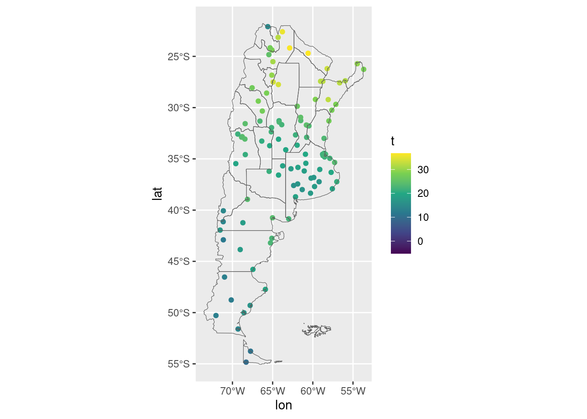
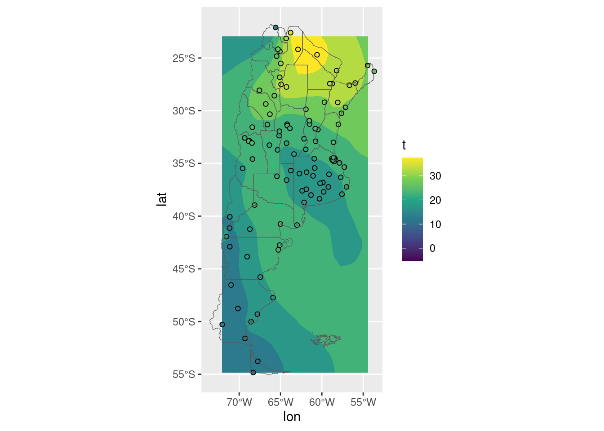
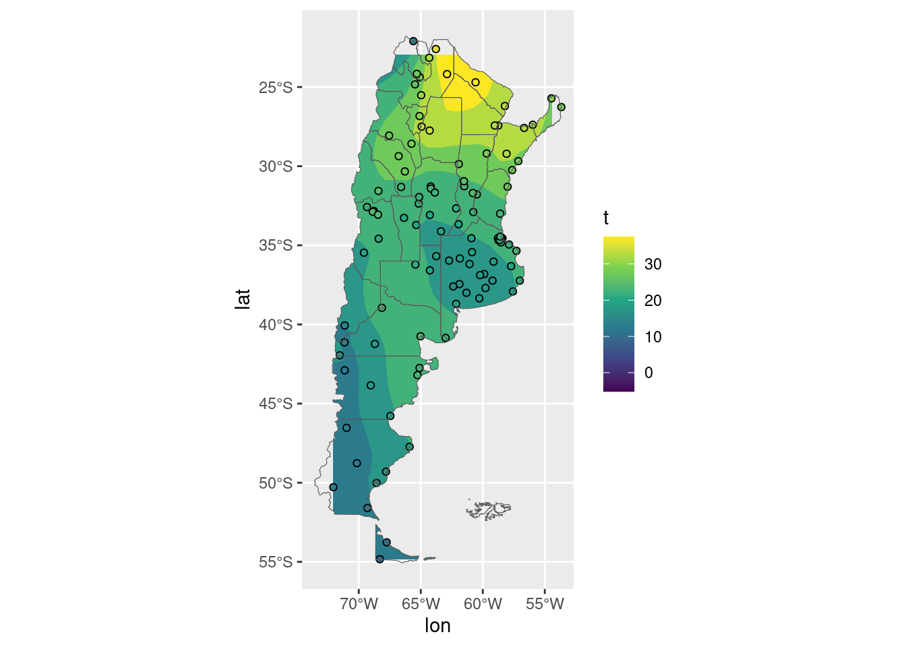
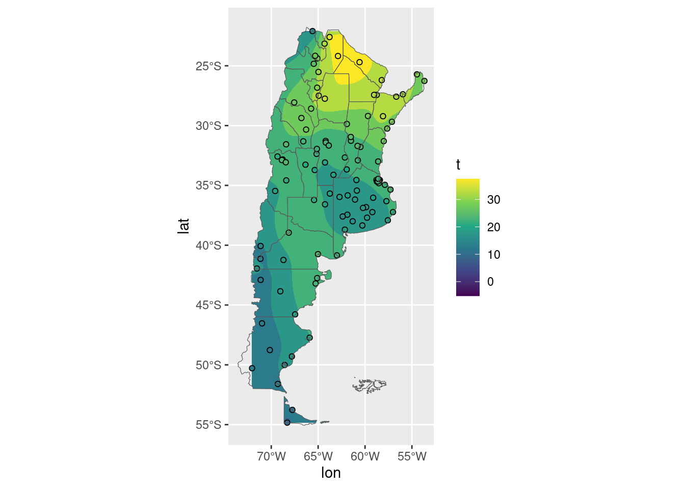

Kriging with metR
Say yo have data measured at different weather stations, which in Argentina might look something like this
estaciones[data, on = c("nombre" = "station")] |>
ggplot(aes(lon, lat)) +
geom_point(aes(color = t)) +
geom_sf(data = argentina_provincias, inherit.aes = FALSE, fill = NA) +
scale_color_viridis_c()
Because this is not a regular grid, it’s not possible to visualise this data with contours as is. Instead, it’s necessary to interpolate it into a regular grid.
There are many ways to go from irregular measurement locations to a regular grid and it comes with a bunch of assumptions.
But for quick an dirty visualisations, metR::geom_contour_fill() can use kriging by setting kriging = TRUE
estaciones[data, on = c("nombre" = "station")] |>
ggplot(aes(lon, lat)) +
metR::geom_contour_fill(aes(z = t),
kriging = TRUE) +
geom_point(aes(fill = t), shape = 21) +
geom_sf(data = argentina_provincias, inherit.aes = FALSE, fill = NA) +
scale_color_viridis_c(aesthetics = c("fill", "colour")) 
One big problem with this is that by default it estimates values in the bounding box of the data, which in this case includes a bunch of the Atlantic Ocean. So it would be nice to be able to only show the contours over land.
In a desperate attempt to procrastinate from writing my thesis I implemented this functionality.
Now, the clip argument takes a polygon which clips the contours.
estaciones[data, on = c("nombre" = "station")] |>
ggplot(aes(lon, lat)) +
metR::geom_contour_fill(aes(z = t),
kriging = TRUE,
clip = argentina_provincias_sin_malvinas) +
geom_point(aes(fill = t), shape = 21) +
geom_sf(data = argentina_provincias, inherit.aes = FALSE, fill = NA) +
scale_color_viridis_c(aesthetics = c("fill", "colour")) 
Another small issue is that the default interpolates to a 40-pixel wide grid, which is a bit too coarse and doesn’t reach the top corners of the map.
The kriging argument now can take a numeric, which defines number of gridpoints each direction.
estaciones[data, on = c("nombre" = "station")] |>
ggplot(aes(lon, lat)) +
metR::geom_contour_fill(aes(z = t),
kriging = 100,
clip = argentina_provincias_sin_malvinas) +
geom_point(aes(fill = t), shape = 21) +
geom_sf(data = argentina_provincias, inherit.aes = FALSE, fill = NA) +
scale_color_viridis_c(aesthetics = c("fill", "colour")) 
Much better!
You can install the development version of metR with
install.packages("metR", repos = c("https://eliocamp.github.io/metR", getOption("repos")))